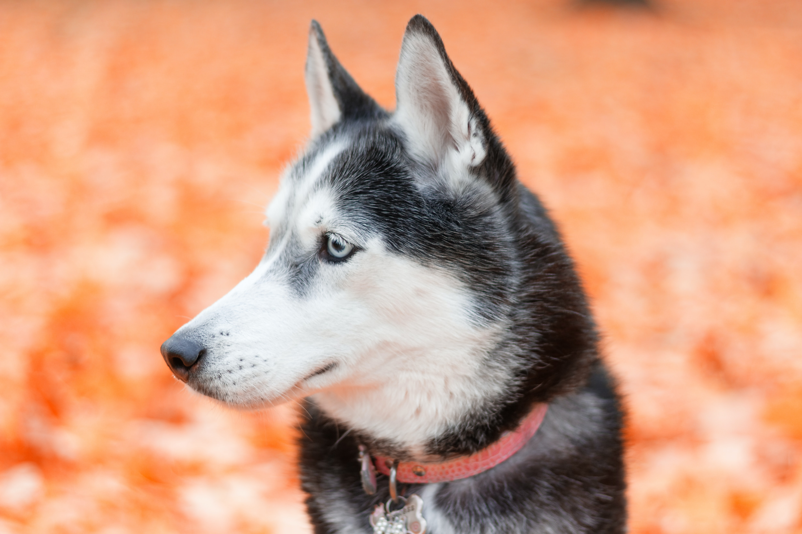
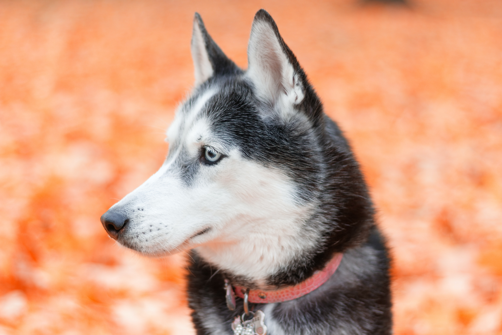
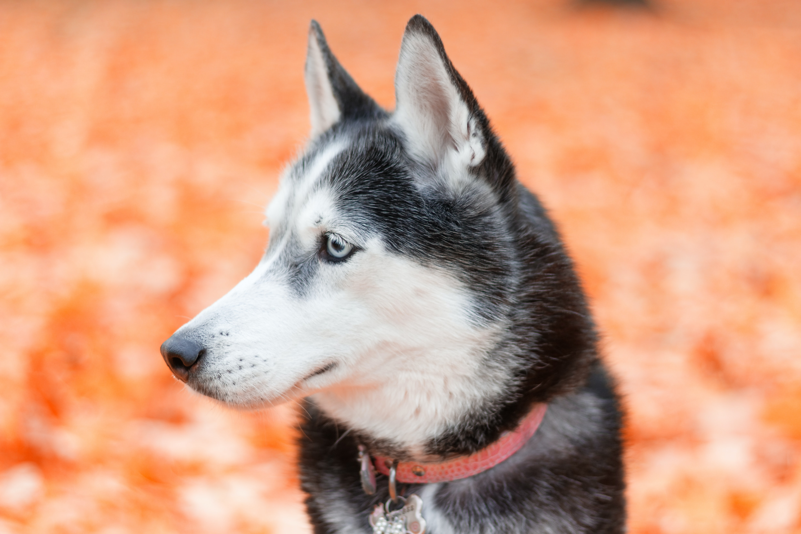
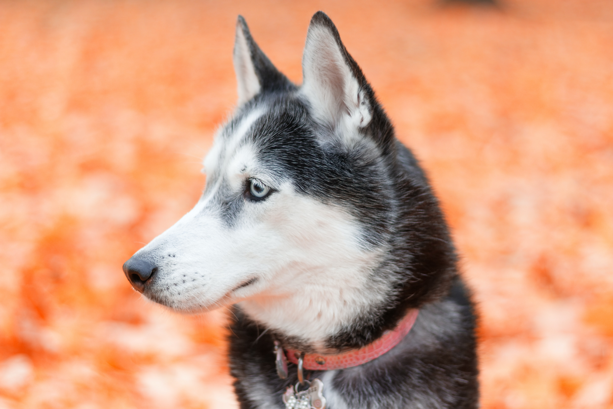

Welcome To Blueridge Canine Academy
 



Training is an important part of any dog's life, and is important for several reasons. It provides mental stimulation which helps to keep your dog happy, and if combined with morning exercise your dog will be mentally and physically tired at the end and far more likely to sleep during the day.
Some common issues that we fix are Barking, howling and whining throuse postive reinforcement, We also have fixed puppy chewing which could lead to further destruction of your property and could harm the dog if you don't get chewing under control, we also help with digging problems, separation anxiety, potty training, begging, chasing, bitining, and overall agression that your dog might be experiencing.
We highly recommend booking your puppy into puppy school classes, which are an important way of socialising
your puppy with other dogs. Your puppy can then use this practice and learning when they meet other dogs at
the park or on walks as they grow into adult dogs. Puppies have a ‘critical socialisation period’ from about
3-17 weeks of age. This is the time when they need to socialise with other dogs in order to learn social cues
and how to communicate well with other dogs.
For dogs that are no longer in the puppy stage, training classes are offered in most areas.
classes that use reward-based training that revolves around positive reinforcement as the basis of training.
With years of experienc we are here to help
and make your life easer and your dogs life more enjoybale through proper training.